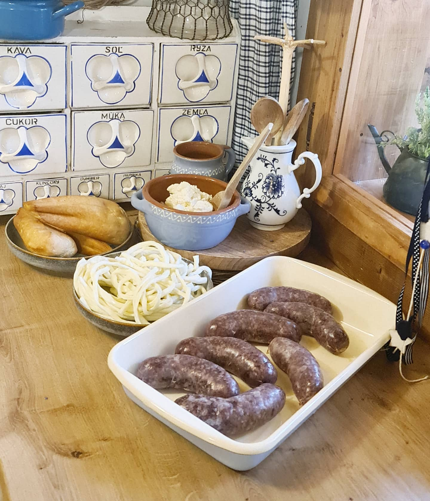

Halušky podľa @v_chalupke — Normy Jedál
Budú halušky....
Čo už, keď my máme radi naše Slovenské jedlá 🤫
Slovenské špeciality prišli za nami . Hanka z Papradna nám priniesla výborné korbáčiky, chutnú bryndzu, údený syr aj jaterničky.
#kolibapapradno #naseslovenske #tradicnerecepty #syr #budúhalušky #milujemslovensko #halusky #kuchyna #slovenskakuchyna